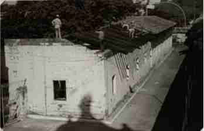

Initially the mansion belonged to the Yegros family, then it was part of the country's prison system. Later it was part of the Conciliar Seminary and later housed the Vincentian Sisters who founded La Providencia School until their subsequent move.
The property became the Catholic University of Our Lady of the Assumption, and was recovered to be a Museum that functioned in the Metropolitan Curia, until the death of Monsignor Juan Sinforiano Bogarín. By his will, he was transferred to the Metropolitan Seminary. In the month of August 1958, Monsignor Agustín Blujaki took charge of the collection.
The Museum of Sacred Art was born from the pastoral tours of the first Archbishop of Paraguay, Monsignor Juan Sinforiano Bogarín, at the end of the 19th and 20th centuries. Where it exhibits carvings from the old Jesuit missions, Franciscan carvings, collections from the colonial era and the 20th century, pieces related to the national history of the time of the War against the Triple Alliance, Post-war Paraguay, Presidency of Don Carlos Antonio López, from the Chaco War, Sacred Art objects, ethnographic and archaeological collections, of great value, initiated by the Ethnographer and Archaeologist José Antonio Gómez Perasso, expanded and enriched by the indigenous communities.
The classification and adaptation of the collection of the Bogarín Museum was carried out in 1994 with the installation of thematic rooms: Jesuit Room, Popular Art Room of the 19th and 20th centuries, Franciscan Room, Sacred Art Room, National History Room and Thematic Exhibition Room.
By disposition of Monsignor Pastor Cuquejo, the collection of the Museum was incorporated into the Bogarín Museum: Treasure of the Cathedral of Asunción Monsignor Agustín Blujaki. The Treasure Museum of the Cathedral has more than 400 pieces in its collection, among which the Silverware of the Cathedral of Asunción stands out. The Juan Sinforiano Bogarín Museum has more than 1,300 museum pieces.
Architect Ramón Duarte Burró, member of the National Commission for the Cultural Assets of the Church explains: "The purpose of the Institution is the Conservation of the Artistic and Cultural Heritage of the Church and also objects related to the History of the nation"
The construction is typical of the Colonial era, with an interior gallery. The main facade located on the alley, is simple, without ornaments, the use of load-bearing construction structures and simple spatial organizations is rescued. It belongs to the heritage of the style of the eighteenth and nineteenth centuries.
Architectural plan in U: The building is located in an area that today belongs to the Catholic University, which is accessed through the Alley next to the Cathedral of Asunción, through an old solid wood door, which leads to a hall and interior distribution gallery.
It was in 1979 that the Museum was installed in the place where it is to this day.